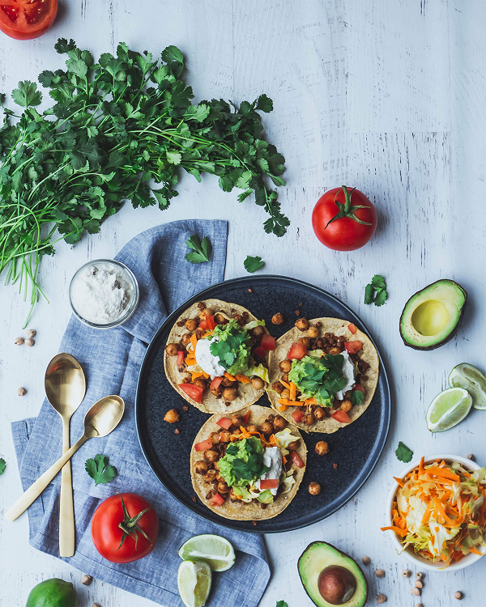

 ひよこ豆とアボカドのタコス 洋食 エスニック たっぷりのひよこ豆とレンズ豆にアボカドとトマトを添えて、少しライムを絞ったらおいしいタコスのできあがりです。 材料(2人分) アボカド 1個 レンズ豆 200g トマト 2個 ライム果汁 大さじ1 塩 少々 トルティーヤ 適量 作り方 テキストテキストテキストテキスト テキストテキストテキストテキスト テキストテキストテキストテキスト テキストテキストテキストテキスト テキストテキストテキストテキスト